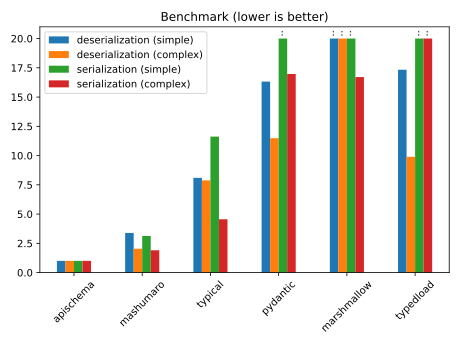

Optimizations and benchmark¶
apischema is (a lot) faster than its known alternatives, thanks to advanced optimizations.

Note
Chart is truncated to a relative performance of 20x slower. Benchmark results are detailed in the results table.
Precomputed (de)serialization methods¶
apischema precomputes (de)serialization methods depending on the (de)serialized type (and other parameters); type annotations processing is done in the precomputation. Methods are then cached using functools.lru_cache, so deserialize and serialize don't recompute them every time.
Note
The cache is automatically reset when global settings are modified, because it impacts the generated methods.
However, if lru_cache is fast, using the methods directly is faster, so apischema provides apischema.deserialization_method and apischema.serialization_method. These functions share the same parameters than deserialize/serialize, except the data/object parameter to (de)serialize. Using the computed methods directly can increase performances by 10%.
from dataclasses import dataclass
from apischema import deserialization_method, serialization_method
@dataclass
class Foo:
bar: int
deserialize_foo = deserialization_method(Foo)
serialize_foo = serialization_method(Foo)
assert deserialize_foo({"bar": 0}) == Foo(0)
assert serialize_foo(Foo(0)) == {"bar": 0}
Warning
Methods computed before settings modification will not be updated and use the old settings. Be careful to set your settings first.
Avoid unnecessary copies¶
As an example, when a list of integers is deserialized, json.load already return a list of integers. The loaded data can thus be "reused", and the deserialization just become a validation step. The same principle applies to serialization.
It's controlled by the settings apischema.settings.deserialization.no_copy/apischema.settings.serialization.no_copy, or no_copy parameter of deserialize/serialize methods. Default behavior is to avoid these unnecessary copies, i.e. no_copy=False.
from timeit import timeit
from apischema import deserialize
ints = list(range(100))
assert deserialize(list[int], ints, no_copy=True) is ints # default
assert deserialize(list[int], ints, no_copy=False) is not ints
print(timeit("deserialize(list[int], ints, no_copy=True)", globals=globals()))
# 8.596703557006549
print(timeit("deserialize(list[int], ints, no_copy=False)", globals=globals()))
# 9.365363762015477
Note
Object deserialization is also optimized following
Serialization passthrough¶
JSON serialization libraries expect primitive data types (dict/list/str/etc.). A non-negligible part of objects to be serialized are primitive.
When type checking is disabled (this is default), objects annotated with primitive types doesn't need to be transformed or checked; apischema can simply "pass through" them, and it will result into an identity serialization method, just returning its argument.
Container types like list or dict are passed through only when the contained types are passed through too (and when no_copy=True)
Note
Enum subclasses which also inherit str/int are also passed through
Passthrough options¶
Some JSON serialization libraries natively support types like UUID or datetime, sometimes with a faster implementation than the apischema one — orjson, written in Rust, is a good example.
To take advantage of that, apischema provides apischema.PassThroughOptions class to specify which type should be passed through, whether they are supported natively by JSON libraries (or handled in a default fallback).
apischema.serialization_default can be used as default fallback in combination to PassThroughOptions. It has to be instantiated with the same kwargs parameters (aliaser, etc.) than serialization_method.
from collections.abc import Collection
from uuid import UUID, uuid4
from apischema import PassThroughOptions, serialization_method
uuids_method = serialization_method(
Collection[UUID], pass_through=PassThroughOptions(collections=True, types={UUID})
)
uuids = [uuid4() for _ in range(5)]
assert uuids_method(uuids) is uuids
Important
Passthrough optimization is a lot diminished with check_type=False.
PassThroughOptions has the following parameters:
any — pass through Any¶
collections — pass through collections¶
Standard collections list, tuple and dict are natively handled by JSON libraries, but set, for example, isn't. Moreover, standard abstract collections like Collection or Mapping, which are used a lot, are
not guaranteed to have their runtime type supported (having a set annotated with
Collection for instance).
But, most of the time, collections runtime types are list/dict, so others can be handled in default fallback.
Note
Set-like type will not be passed through.
enums — pass through enums¶
tuple — pass through tuple¶
Even if tuple is often supported by JSON serializers, if this options is not enabled, tuples will be serialized as lists. It also allows easier test writing for example.
Note
collections=True implies tuple=True;
types — pass through arbitrary types¶
Either a collection of types, or a predicate to determine if type has to be passed through.
Binary compilation using Cython¶
apischema use Cython in order to compile critical parts of the code, i.e. the (de)serialization methods.
However, apischema remains a pure Python library — it can work without binary modules. Cython source files (.pyx) are in fact generated from Python modules. It allows notably keeping the code simple, by adding switch-case optimization to replace dynamic dispatch, avoiding big chains of elif in Python code.
Note
Compilation is disabled when using PyPy, because it's even faster with the bare Python code.
That's another interest of generating .pyx files: keeping Python source for PyPy.
Override dataclass constructors¶
Warning
This feature is still experimental and disabled by default. Test carefully its impact on your code before enable it in production.
Dataclass constructors calls is the slowest part of the deserialization, about 50% of its runtime! They are indeed pure Python functions and cannot be compiled.
In case of "normal" dataclass (no __slots__, __post_init__, or __init__/__new__/__setattr__ overriding), apischema can override the constructor with a compilable code.
This feature can be toggled on/off globally using apischema.settings.deserialization.override_dataclass_constructors
Discriminator¶
OpenAPI discriminator allows making union deserialization time more homogeneous.
from dataclasses import dataclass
from timeit import timeit
from typing import Annotated, Union
from apischema import deserialization_method, discriminator
@dataclass
class Cat:
love_dog: bool = False
@dataclass
class Dog:
love_cat: bool = False
Pet = Union[Cat, Dog]
DiscriminatedPet = Annotated[Pet, discriminator("type", {"dog": Dog})]
deserialize_union = deserialization_method(Union[Cat, Dog])
deserialize_discriminated = deserialization_method(
Annotated[Union[Cat, Dog], discriminator("type")]
)
##### Without discrimininator
print(timeit('deserialize_union({"love_dog": False})', globals=globals()))
# Cat: 0.760085788
print(timeit('deserialize_union({"love_cat": False})', globals=globals()))
# Dog: 3.078876515 ≈ x4
##### With discriminator
print(timeit('deserialize_discriminated({"type": "Cat"})', globals=globals()))
# Cat: 1.244204702
print(timeit('deserialize_discriminated({"type": "Dog"})', globals=globals()))
# Dog: 1.234058598 ≈ same
Note
As you can notice in the example, discriminator brings its own additional cost, but it's completely worth it.
Benchmark¶
Benchmark code is located benchmark directory or apischema repository. Performances are measured on two datasets: a simple, a more complex one.
Benchmark is run by Github Actions workflow on ubuntu-latest with Python 3.10.
Results are given relatively to the fastest library, i.e. apischema; simple and complex results are detailed in the table, displayed result is the mean of both.
Relative execution time (lower is better)¶
| library | version | deserialization | serialization |
|---|---|---|---|
| apischema | 0.17.0 | / | / |
| mashumaro | 2.9.1 | x2.5 (3.2/1.8) | x2.6 (3.3/2.0) |
| typical | 2.8.0 | x6.6 (7.4/5.9) | x8.2 (11.8/4.7) |
| pydantic | 1.8.2 | x11.9 (14.6/9.2) | x27.5 (39.1/16.0) |
| marshmallow | 3.14.1 | x22.5 (25.6/19.4) | x21.5 (27.1/16.0) |
| typedload | 2.14 | x11.7 (15.3/8.1) | x64.4 (76.4/52.4) |
Note
Benchmark use binary optimization, but even running as a pure Python library, apischema still performs better than almost all of the competitors.